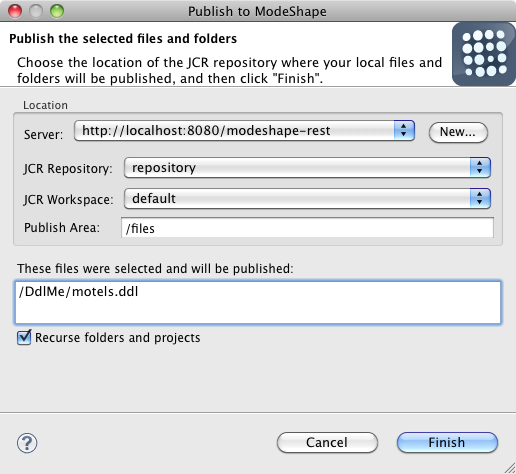

Last revised November 29, 2010
|
Publishing Wizard |
The publishing wizard now allows you to specify where in the JCR repository your files and folders will be published. When you publish to one of these "publish areas", the ModeShape repository will automatically sequence your files to extract useful information and make it available to other repository users. (The kind and structure of information extracted depends upon the type of file and the configuration of the ModeShape repository.) The actual location where the files will be published is constructed by appending the server URL, the names of the JCR repository and workspace, the path to the publish area, and the path of the files and folders within your Eclipse workspace. Here is what the ModeShape publishing wizard looks like:  |